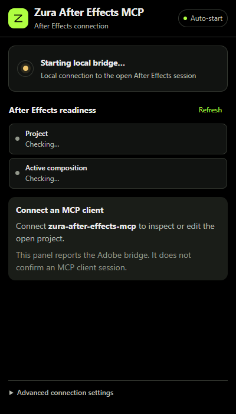

Zura connectors / Windows + macOS
After Effects. From Codex.
Create editable compositions, animate layers and render previews in your open AE project. Paste one prompt into Codex to install the connector, panel and editing skill.

A connector that stays local.
The MCP runs on your computer. The panel connects it to the After Effects session you already have open.
- 01Native, editable workCompositions, text, shapes, masks, effects, layers and keyframes use the Adobe project directly.
- 02Clear operation resultsReadback distinguishes verified edits from changes that still need inspection. Batches stop at the first failed step.
- 03Useful previewsExport PNG frames, discover installed render templates and queue native renders. 32-bit preview output uses a colour-managed render.
Brief. Edit. Inspect.
The bundled editing skill keeps operations bounded and uses stable project item and layer IDs.
- Start with your open project
Inspect the active project and composition before editing. Saved project guards help avoid targeting a different project.
- Make native changes
Create or adjust the requested objects and animation using typed tools. Unsafe expression evaluation is disabled by default.
- Review the result
Inspect values, export a frame or render a preview. Artistic approval still needs an actual review.
One prompt. Automatic setup.
No GitHub account, GitHub CLI or separate CLI login needed.
- Paste into Codex
Copy the prompt below. Codex downloads the public source ZIP and follows the setup guide.
- Let the installer run
It installs Node if needed, builds a durable local server, installs the Adobe panel and editing skill, then verifies Codex registration and MCP startup.
- Load the new connector
If AE was open, save and restart it. Open a new Codex chat and ask Zura After Effects MCP to inspect your current project.
Install Zura After Effects MCP from https://github.com/ZURAVFX/zura-after-effects-mcp and follow its INSTALL.md to complete automatic setup for Codex.